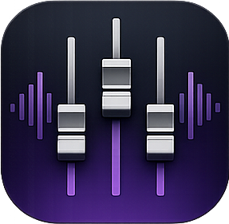

PocketMixerPocketMixer Server runs on your sound booth Mac and gives every musician on stage independent control of their own in-ear monitor mix — wirelessly, in real time.
Loading latest version... · All releases
Each person on stage gets their own independent stereo mix. Turn up your vocals, dial back the drums — without touching the FOH.
Musicians use the free PocketMixer app on their phone or tablet to control their mix in real time over your existing Wi-Fi.
Connect any USB multi-channel audio interface. Supports stereo-linked channel pairs for keyboards and backing tracks.
RTP unicast audio streams directly to each in-ear receiver. Configurable jitter buffer from 0 ms (zero-jitter mode) up to 200 ms.
Save complete snapshots of every musician's mix. Recall them instantly for different setlists or services.
Optional password keeps the mix locked to your team. No stranger can join your network and mess with the levels.